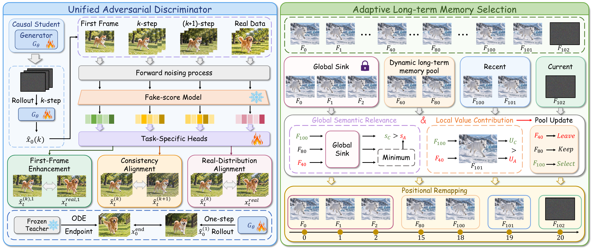

The framework
Learn quality. Remember what matters.
Training-time alignment.
Inference-time memory.

Adaptive long-term memory selection
One-Step Long-Term Memory
Global sink012
Memory pool4080
Candidate100
Recent context101
Current frame102
Memory entry A
Global relevancesC > sA
Local contributionUC > UA
Candidate C
Temporal position